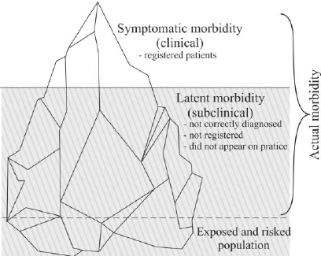
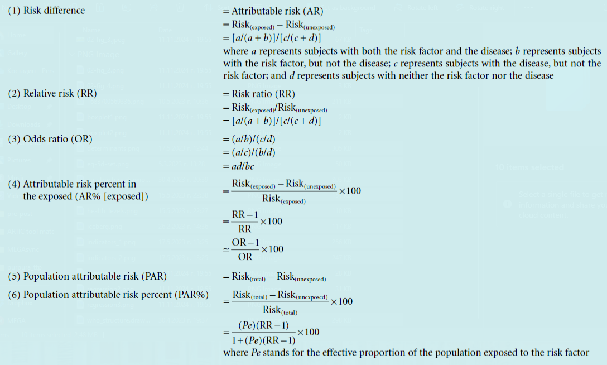

Measurement of diseases and exposure. Risk assessment
English
Public Health
Epidemiology
Medicine | 3rd year
Dental medicine | 5th year
Measurement of disease involves quantifying disease frequency, typically through prevalence, incidence, and mortality rates. Accurate exposure measurement assesses the extent, duration, and intensity of contact with potential risk factors. Together, these metrics enable risk assessment, which evaluates the likelihood of adverse health outcomes from specific exposures. This process combines epidemiological data with statistical models to estimate the probability and severity of health risks, guiding public health interventions and policy decisions.
Definitions
- Illness - Refers to the actual manifestation of a pathological condition or disease in an individual. It encompasses the symptoms and signs experienced by the person and is often the reason for seeking medical attention or treatment.
- Disease - Describes a pathological condition or disorder that involves a disturbance in the normal functioning of the body or its organs. It may be characterized by specific symptoms, signs, or abnormalities that can be diagnosed by healthcare professionals through clinical examination, laboratory tests, or imaging studies.
- Sickness - This term is often used interchangeably with illness or disease and generally refers to a state of poor health or being unwell. It can encompass both physical and mental aspects of health and well-being and may involve various symptoms, discomfort, or impairment of normal activities.
- Morbidity Iceberg - The Morbidity Iceberg, often referred to simply as the “Iceberg of Disease,” is a conceptual model used in epidemiology and public health to illustrate the discrepancy between reported or diagnosed cases of a disease and the actual total number of cases within a population. It is called an “iceberg” because, like an iceberg, only a small portion is visible above the surface, while the majority remains hidden beneath.
- Visible Portion: This represents the reported or diagnosed cases of a particular disease. These are the cases that have come to the attention of healthcare providers, typically through seeking medical care or through active surveillance by public health authorities. These cases are recorded in official health records and databases.
- Hidden Portion: This refers to the undetected or unreported cases of the disease within the population. These cases may go unnoticed for various reasons, such as mild symptoms that do not prompt individuals to seek medical attention, lack of access to healthcare services, underdiagnosis by healthcare providers, or asymptomatic infections. Additionally, some cases may be misdiagnosed or not properly documented.
- Factors Contributing to the Hidden Portion:
- Access to Healthcare
- Diagnostic Practices
- Stigma and Social Factors
- Asymptomatic Cases

Measures of Diseases
- Absolute Number of Cases - Has limited significance in epidemiology. It is useful for administrative purposes, but it does not provide a measure of the magnitude of the problem in the population.
- Frequency Coefficients - Two types of frequency coefficients are used in epidemiology: the incidence and the prevalence.
- Incidence - Measures the rate of occurrence of new cases of a disease in a defined population over a specified period.
- Prevalence - Measures the proportion of individuals in a population who have a particular disease at a specific point in time.
- Proportions - Structural, extensive indicators where the numerator is a part of the denominator. Expressed as a percentage (%).
Measures of Exposure:
Disease Incidence
- Definition: Incidence is a dynamic measure that assesses the frequency of new cases of a disease during a specified period in a population at risk.
- Types of Indicators:
- Incidence Rate: This indicator provides insight into the rate at which new cases of a disease occur within a population over a specific period. It is calculated by dividing the number of new cases of disease or injury during a specified period by the total time each person was observed, summed for all individuals in the population at risk. This measure is often expressed per unit time (e.g., per 1,000 person-years). A higher incidence rate indicates a higher risk of acquiring the disease within the population.\[I_{rate} = \frac{new~cases~of~disease~or~injury~during~specified~period}{Time~each~person~was~observed~totaled~for~all~people}\cdot{10}^n \]
- Cumulative Incidence: This indicator offers a broader perspective by measuring the proportion of individuals who develop the disease within the initial population at risk over a specified period. Also known as the attack rate or risk, cumulative incidence is calculated by dividing the number of new cases of disease or injury by the size of the population at the start of the period. This measure provides a clear understanding of the risk of developing the disease within a defined population during a specific timeframe. \[CI = \frac{New~cases~of~disease~or~injury}{Size~of~population~at~start~of~period}\cdot{10}^n \cdot t\]
- Significance:
- Increased Incidence: An increase in disease incidence may indicate various factors such as strong acting risk factors (e.g., exposure to radiation, natural disasters), low levels of prevention (e.g., lack of vaccination, poor sanitation), or epidemiological outbreaks (e.g., infectious diseases). Monitoring changes in disease incidence can help identify emerging health threats and inform public health interventions.
- Decreased Incidence: A decrease in disease incidence may result from effective prevention strategies (primarily primary prevention) and the efficient organization of healthcare services. It indicates successful efforts in reducing the risk of disease within a population and improving overall health outcomes.
Disease Prevalence
- Definition: Prevalence, sometimes referred to as the frequency of occurrence, represents the proportion of individuals in a given population who have a specific disease or condition at a particular point in time or over a specified period. Unlike incidence, which focuses solely on new cases, prevalence includes both new and pre-existing cases at a given moment. The formula for prevalence is \[P= \frac{all~new~cases~and~pre-existing~cases~of~disease~or~injury}{Population~during~the~same~time~period}\cdot{10}^n\]
- Types of Indicators:
- Point Prevalence: This indicator measures the proportion of individuals with a specific disease or condition on a particular date.
- Period Prevalence: This indicator measures the proportion of individuals with a specific disease or condition at any time during a specific interval.
- Significance:
- Distinguishing Prevalence from Incidence:
- The numerator of incidence consists only of individuals whose disease began within a specified interval.
- The numerator of prevalence includes all individuals who have the disease for a specific reason during the specified interval, regardless of when the disease started. It includes not only new cases but also pre-existing cases, representing individuals who remained ill for some part of the specified interval.
- Factors Influencing Prevalence:
- Increased Prevalence: Prevalence tends to increase with longer durations of diseases (chronic conditions), lower disease mortality rates, more effective therapies for maintaining health, increased exposure to risk factors, immigration of sick or predisposed individuals, emigration of healthy individuals, and advancements in diagnostic methods.
- Decreased Prevalence: Prevalence decreases with diseases with high mortality rates, acute conditions with rapid recovery, reduction in disease incidence, immigration of healthy individuals, and emigration of sick individuals.
- Distinguishing Prevalence from Incidence:
Measures of Exposure
Relative Risk
- Definition: Relative risk is a measure of the association between a particular disease or condition and the factor or exposure under investigation. It represents the ratio of the incidence of the disease among the exposed to the incidence of the disease among the unexposed group. It serves as a measure of the strength of the relationship between the factor and the disease. The values can range from 0 to + infinity.
- Formula: \[RR = \frac{I_{e}}{I_{unex}}\]
- Interpretation:
- Relative Risk = 1 means that the incidence among the exposed is equal to the incidence among the unexposed, indicating no association between the exposure and the disease.
- A value greater than 1 indicates that the incidence among the exposed is higher compared to that among the unexposed, meaning that the exposure is a factor that increases the likelihood of developing the disease.
- A relative risk value less than 1 indicates a lower incidence among the unexposed, meaning that the exposure reduces the likelihood of developing the disease, indicating a protective effect.
Atributive Risk
- Definition: Attributable risk is the rate (proportion) of a disease or other outcome in exposed individuals that can be attributed to the exposure. This is a more useful term for public health purposes as it reflects the amount, usually expressed as a percentage, by which the risk of a disease is reduced by elimination or control of a particular exposure. Using attributable risk, it is possible to estimate the number of people spared the consequences of exposure, by subtracting the rate of the outcome (usually incidence or mortality) among the unexposed from the rate among the exposed individuals.
- Formula: \[AR = I_{e} - I_{unex}\]
- Interpretation: For example, if there were 6 deaths per 100 among smokers, and 1 death per 100 in non-smokers, the attributable risk would be 5 per 100. This assumes that causes other than the one under investigation have had equal effects on the exposed and unexposed groups.
Odds Ratio
Definition: The odds ratio is a relative measure of risk that quantifies the likelihood of exposed individuals developing a disease compared to the likelihood of unexposed individuals developing the same disease. The odds ratio is a way to compare whether the probability of an event occurring is the same for two groups.
Formula: \[OR = \frac{Odds_{e}}{Odds_{unex}}\]
Interpretation:
- If the value is equal to 1, the probability of the event occurring is the same for both groups.
- A value greater than 1 indicates that the event is more likely to occur in the first group,
- a value less than 1 indicates that the event is more likely to occur in the second group.
Risk Difference (Attributable Risk)
- Definition: The attributable risk, or risk difference, is the difference in incidence between the exposed and unexposed groups, i.e., it assesses the excess morbidity in the exposed group due to the impact of the studied risk factor. The attributable risk quantifies the risk in the exposed group that is attributable to the exposure. It represents the portion of morbidity that could be reduced or eliminated by removing the exposure.
- Formula: \[RD = AR = I_{e} - I_{unex}\]
- Interpretation: For example, if the risk difference is 0.05, it means that 5 out of 100 individuals developed the disease as a result of the exposure.
- Number Needed to Harm (NNH): This is the number of exposed individuals needed to develop one additional case of the disease. \[NNH = \frac{1}{RD}\]
Etiologic Fraction (EF) also attributable fraction in the exposed
- Definition: The attributable fraction in the exposed represents the relative proportion of diseased individuals in the exposed group who developed the disease as a result of the impact of the studied risk factor.
- Formula:
- \[EF = \frac{I_{e} - I_{unex}}{I_{e}}\]
- Alternatively, if incidence data are not available, the relative risk (RR) can be used to calculate the EF \[EF = \frac{RR - 1}{RR}\]
- Interpretation: For example, if the attributable fraction in the exposed is 10%, it means that one-tenth of all diseased individuals in the exposed group developed the disease as a result of the impact of the studied risk factor.
Population Attributable Risk (PAR)
- Definition: The population attributable risk assesses the proportion of all cases of the disease in the entire population (both exposed and unexposed) that are attributable to the exposure or the action of the risk factor. It evaluates the excess morbidity in the entire population attributable to the risk factor.
- Formula: \[PAR = I_{population} - I_{unex}\]
- Interpretation: For example, a study in the USA in 1986 showed that the incidence of lung cancer among non-smokers was 8.7/100,000 per year, while in the entire population, it was 72.5/100,000 per year. The PAR of 63.8/100,000 per year is a result of smoking.
Population Etiologic Fraction (PEF)
- Definition: The population etiologic fraction represents the relative proportion of morbidity in the entire population (both exposed and unexposed) that is a result of the action of the exposure.
- Formula: \[PEF = \frac{I_{population} - I_{unex}}{I_{population}}\]
- Interpretation: For example, if the population etiologic fraction is 88%, it means that 88 out of 100 cases of the disease in the entire population are a result of the action of the studied risk factor.
